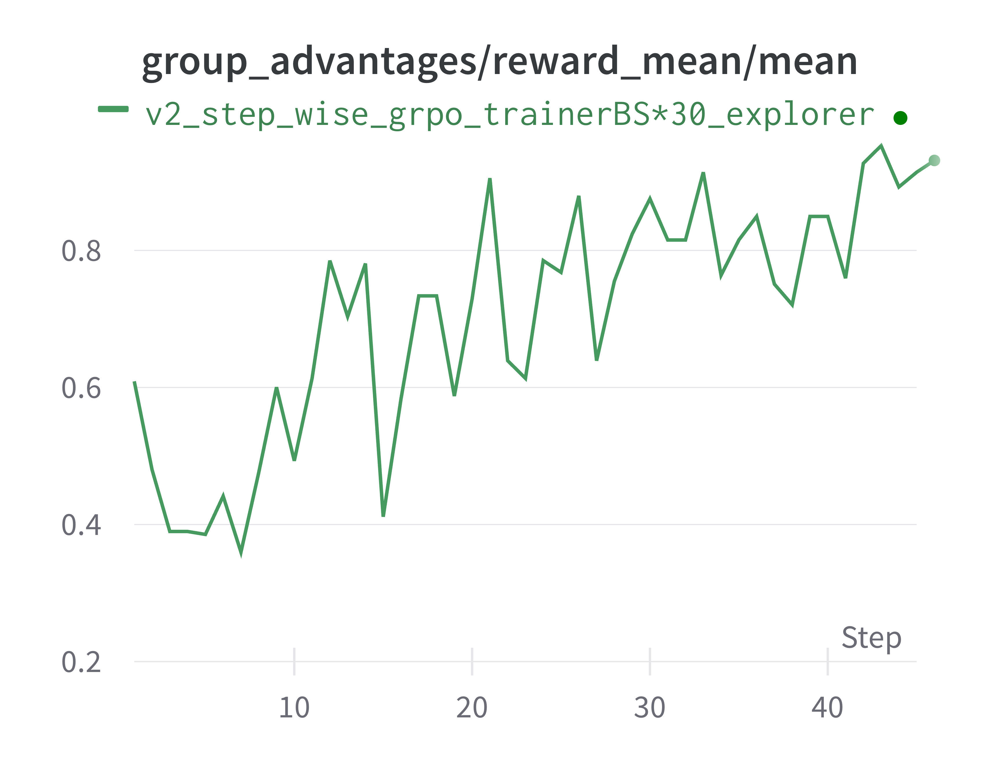

General Multi-Step RFT
In Trinity-RFT, we support general multi-step RFTs, which can be used to train agents by interacting with environments in multiple rounds.
Different from the multi-turn RFT that concatenates the interaction results into one single Experience, this approach treats each step as an individual Experience, enabling RL agents to handle longer contexts.
We will now illustrate the general multi-step workflow using ALFWorld. For a hands-on look, you can skip directly to the code implementation.
Build a general step-wise workflow
Basic concept
In Trinity, we provide two types of general step-wise workflows: StepWiseRewardWorkflow and RewardPropagationWorkflow. These workflows setup the basic structure of a step-wise workflow and returns the a list of experiences in each run. Their difference is StepWiseRewardWorkflow computes the reward for each step and RewardPropagationWorkflow computes the reward after all steps and propagates the reward to the previous steps. See trinity/common/workflows/step_wise_workflow.py for more details.
To build a new workflow, you mainly need to identify each interaction step in step() and the reward function in reward(). For example, the core code of ALFWorld workflow is shown as follows:
class StepWiseAlfworldWorkflow(RewardPropagationWorkflow):
...
def step(self, step_num: int) -> bool:
if self.done:
return False
# Format observation for the model
format_obs = format_observation(self.observation) # type: ignore
self.memory.append({"role": "user", "content": format_obs})
# Get action from the model
responses = self.model.chat(self.memory)
response_text = responses[0].response_text
self.memory.append({"role": "assistant", "content": response_text})
action = parse_action(response_text)
# Execute action in the environment
observation, reward, done, info = self.env.step(action)
# Update internal state
self.observation = observation
self.done = done
if self.done:
self.final_reward = reward
# Return False to stop the run if the episode is done
return not self.done
def reward(self, exps: list[Experience]) -> float:
return self.final_reward
Also, remember to register your workflow:
@WORKFLOWS.register_module("step_wise_alfworld_workflow")
class StepWiseAlfworldWorkflow(RewardPropagationWorkflow):
"""A step-wise workflow for alfworld task."""
...
and include it in the init file trinity/common/workflows/__init__.py
# -*- coding: utf-8 -*-
"""Workflow module"""
from .workflow import WORKFLOWS, MathWorkflow, SimpleWorkflow
+from .envs.alfworld.alfworld_workflow import StepWiseAlfworldWorkflow
__all__ = [
"WORKFLOWS",
"SimpleWorkflow",
"MathWorkflow",
+ "StepWiseAlfworldWorkflow",
]
Other Configuration
In general multi-step scenarios, each run may generate various number of experiences. To accomodate this case, we provide some flexible designs.
algorithm.advantage_fn = step_wise_grpo: This function allows you compute the advantages for the collected experience before adding to the buffer. For this example, we usestep_wise_grpowhich broadcasts advantages from the last step to previous steps.buffer.train_batch_size: The number of experiences to be sampled from the buffer for training, which can be different from the number of generated experiences in each explore step.buffer.trainer_input.use_priority_queue = true: UsingPriorityQueueallows the model to use the experiences with higher priority.synchronizer.sync_style = dynamic_by_explorer: The explorer determines when to synchronize the model weights with the trainer.
The example configuration is shown as:
project: "ALFWORLD"
name: "Step_Wise_Alfworld"
checkpoint_root_dir: /PATH/TO/CHECKPOINT/ALFWORLD_RFT/
algorithm:
algorithm_type: grpo
repeat_times: 16
advantage_fn: step_wise_grpo
model:
model_path: /PATH/TO/MODEL/
max_response_tokens: 16384
max_model_len: 20480
cluster:
node_num: 1
gpu_per_node: 8
buffer:
total_epochs: 20
batch_size: 16
train_batch_size: 7680 # here: batch_size * repeat_times * max_env_steps
max_retry_times: 3
max_retry_interval: 1
explorer_input:
taskset:
name: alfworld
storage_type: file
path: 'examples/grpo_alfworld/alfworld_data' # PATH TO ALFWORLD DATA
format:
prompt_key: 'game_file'
rollout_args:
temperature: 1.0
logprobs: 0
workflow_args:
max_env_steps: 30
enable_progress_bar: false
default_workflow_type: 'step_wise_alfworld_workflow'
trainer_input:
experience_buffer:
name: alfworld_buffer
storage_type: queue
use_priority_queue: true
explorer:
max_repeat_times_per_runner: 1
runner_num: 32
max_timeout: 3600
rollout_model:
enable_history: true
engine_num: 2
tensor_parallel_size: 2
enable_prefix_caching: false
enforce_eager: true
dtype: bfloat16
seed: 42
gpu_memory_utilization: 0.7
enable_chunked_prefill: true
env_vars:
TMPDIR: /PATH/TO/ALFWORLD_TMP_DIR
synchronizer:
sync_style: dynamic_by_explorer
sync_method: 'nccl'
sync_interval: 2
sync_timeout: 3600
trainer:
trainer_type: 'verl'
trainer_config_path: 'examples/grpo_alfworld_general_multi_step/train_alfworld.yaml'
save_interval: 50
Below, we provide the commands for running the ALFWorld task.
Example: Multi-Step ALFWorld
Environment Preparation
To install the ALFworld environment, you can follow the instructions below.
Pip install:
pip install alfworld[full]Export the path:
export ALFWORLD_DATA=/path/to/alfworld/dataDownload the environment:
alfworld-download
Now you can find the environment in $ALFWORLD_DATA and continue with the following steps.
You may refer to the original repository for more details.
Data Preparation
Our dataset follows the format in Huggingface datasets library, so we should correspondingly convert our env dataset.
Just check the data preparation scripts and run the following command.
python examples/grpo_alfworld/get_alfworld_data.py
The task is described as an environment instead of a single prompt. The task description is the game_file file path.
Config preparation and run the experiment
The default config file is alfworld.yaml.
You may revise the configurations properly and run the experiment!
trinity run --config examples/grpo_alfworld_general_multi_step/alfworld.yaml
The results are shown in the following figure.

Note that we use a Qwen2.5-3B model fine-tuned with SFT as our starting point, ensuring that the model has some basic understanding of the environment.